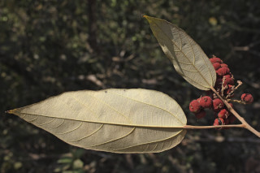
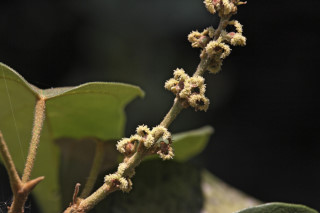
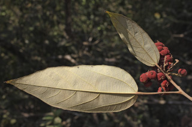
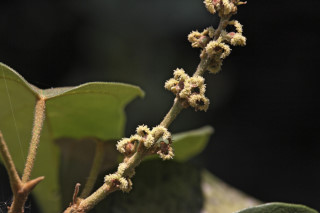
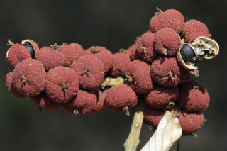
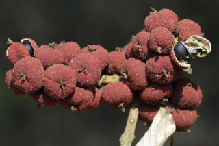

Tamil: Kamala, Kanapotta, Kapila, Kapilapodi, Kapili, Konaspootoo, Kungumam, Kurangu manjanathi, Manjanai, Thavattai
Malayalam: Cenkolli, Cindooram, Kampipala, Kapila, Kapilam Kunkumam, Kuramadakka, Kuramadakku, Kurukkutti, Manjana, Pipponnakam, Ponni, Pinoo, Ponnagam, Ponnakam, Ponoo, Punna, Shenkolli, Sinduri, Tavitu, Thavatta
Kannada: Kampillaka, Kumkumada mara, Kunkumada mara
English: Kamala dye tree, Monkey face tree
Vernacular names
Images
 



 
